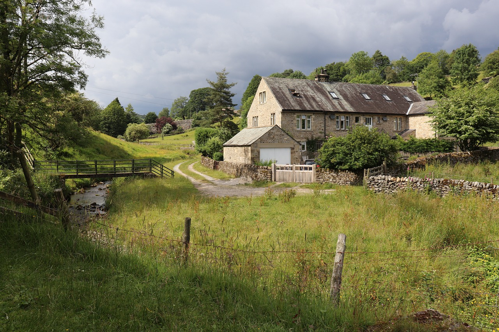
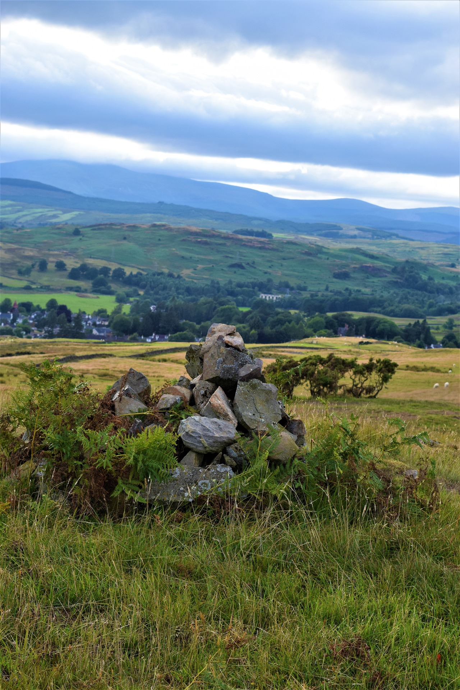

Welcome to our Farm

Donald Family Farm Experience, is a newly converted historical farm in the Scottish Borders. Welcome to our beautiful and family-friendly experience for everyone
Everyone is invited! Our farm has everything for all the family from the young ones, older kids, teenagers and grown-ups to! Come see our varied farm-life, go on adventures on the local trails and have little break for a cup of tea and one of our homemade scones in our visitors centre.
Our highly experienced staff are there to cater to all your needs. All our facilities are wheelchair accessible.
About us

The Donald family have been worked the land for generations and are proud to share their proud heritage with you. We have won several awards from our local newspapers and councils.
Opening hours
We are open weekday from March 30 to October 30. Sunday's are available for special events, for more information please contact us via email or by phone.
From 10am to 4pm